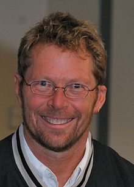

Alistair Cockburn
American computer scientist, known as one of the initiators of the agile movement in software development

Alistar Cockburn
- Cockburn started studying the methods of object oriented (OO) software development for IBM. From 1994, he formed "Humans and Technology" in Salt Lake City. He obtained his degree in computer science at the Case Western Reserve University. In 2003 he received his PhD degree from the University of Oslo.
- Cockburn helped write the Manifesto for Agile Software Development in 2001, the agile PM Declaration of Interdependence in 2005, and co-founded the International Consortium for Agile in 2009 (with Ahmed Sidky and Ash Rofail). He is a principal expositor of the use case for documenting business processes and behavioral requirements for software, and inventor of the Cockburn Scale for categorizing software projects.
- The methodologies in the Crystal family (e.g., Crystal Clear), described by Alistair Cockburn, are considered examples of lightweight methodology. The Crystal family is colour-coded to signify the "weight" of methodology needed. Thus, a large project which has consequences that involve risk to human life would use the Crystal Sapphire or Crystal Diamond methods. A small project might use Crystal Clear, Crystal Yellow or Crystal Orange.
- Cockburn presented his Hexagonal Architecture (2005) as a solution to problems with traditional layering, coupling and entanglement.
- In 2015 Alistair launched the Heart of Agile movement which is presented as a response to the overly complex state of the Agile industry.